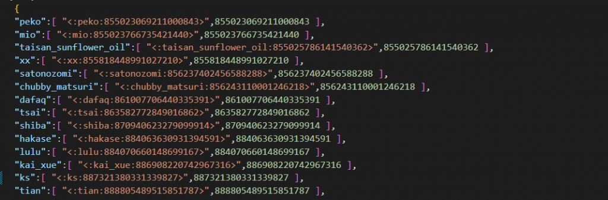
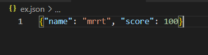

Json又名為JavaScript Object Notation，一般應用在資料傳輸上，其實Json並不複雜，簡單來說，我們可以把它當作成是一種資料撰寫儲存的格式，就像這樣：

上圖是我平常dc群組裡所有的表情符號，將其抓下來後以json的格式儲存，以便之後查詢利用。另外，我們在爬蟲時也經常看到json，像是有時候在網站上做互動功能時，其實就是生成一個json後利用request上傳到網站，使其做出相對應的行為。
而我們這邊主要用到的是將資料以json的方式儲存，之後再利用python的json套件，將其載入後，轉成dict型態，就可以方便我們加工處理了。
JSON的讀寫
python有內建json讀寫的套件，但使用前要先import
主要是透過將json轉換成python的dictionary後進行操作再寫回去達成讀寫的效果。
1 | import json |
主要會用到這幾種方法:
- json.load() : 將json檔案轉換成dictionary
- json.dump() : 將dictionary轉換成json檔案
- json.loads() : 將字串轉換成python的dictionary
- json.dumps() : 將python的dictionary轉換成字串
而json裡的字串和陣列之類的型態也都會換成python自己的型態
舉例來說，有個叫ex.json的json檔長得像下面這樣:
1 | { |
如果今天想要透過同個資料夾的python檔案將其中的score改成100，拿load/dump會這樣寫:
1 | import json |
跑完後json檔就會變這樣

以loads/dumps的話就會長得像下面這樣:
1 | import json |